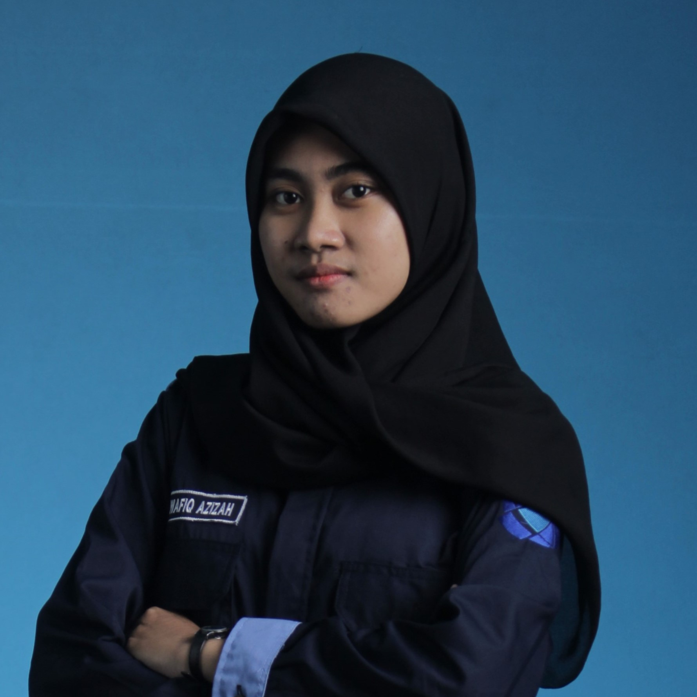

Wafiq Azizah
Teknik Informatika
Video Editing • Design Grafis • Ms. Office
Universitas Muhammadiyah Gresik
 wafiqbila@gmail.com
wafiqbila@gmail.com zw.2311
zw.2311 ziwa.dub
ziwa.dub 085102250193
085102250193
Cumlaude • Teknik Informatika
Hai, saya Wafiq
Saya lulusan Universitas Muhammadiyah Gresik yang aktif di organisasi dan berpengalaman sebagai pengajar TIK serta staf retail. Memiliki keterampilan dalam editing video, desain grafis, dan Microsoft Office.
Ringkasan Pengalaman
- Magang: Pengajar TIK di SMP (2023)
- Sekretaris I — Himpunan Teknik Informatika (2022–2023)
- Store Attendant — Noval Jaya Makmur (2025)